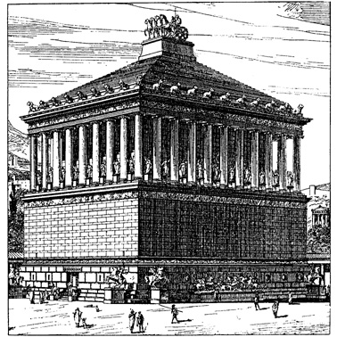

Halikarnaso mauzoliejus – vienas iš septynių pasaulio stebuklų, stovėjęs Mažojoje Azijoje, Halikarnaso mieste (dabar Bodrumas). Mauzoliejų Persų imperijos Karijos provincijos satrapui Mauzolui (valdė 377–353 m. pr. m. e.) po mirties pastatydino jo žmona ir sesuo Artemisija.
